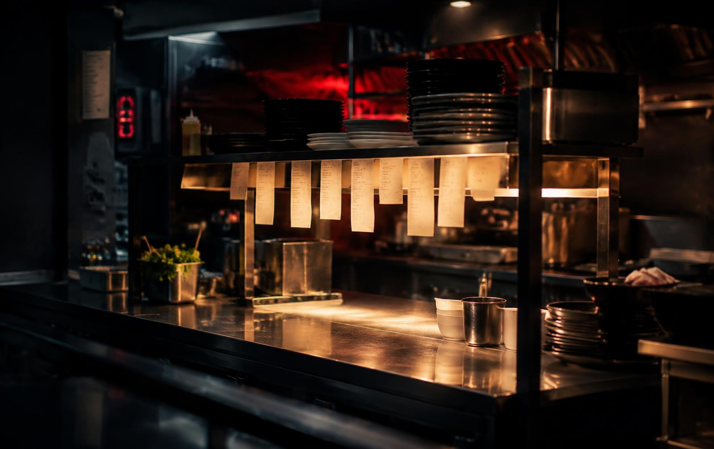
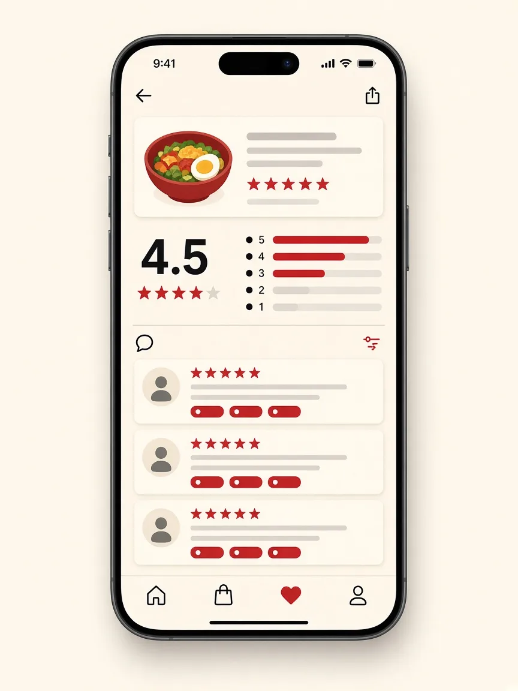
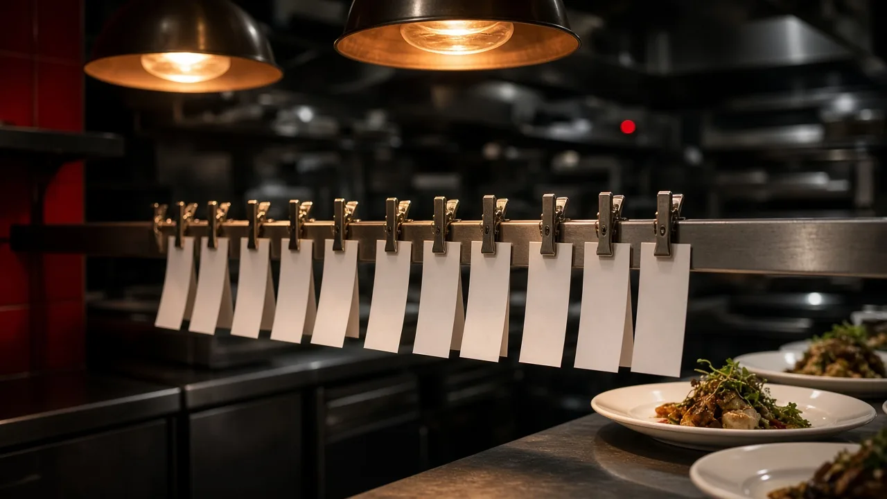
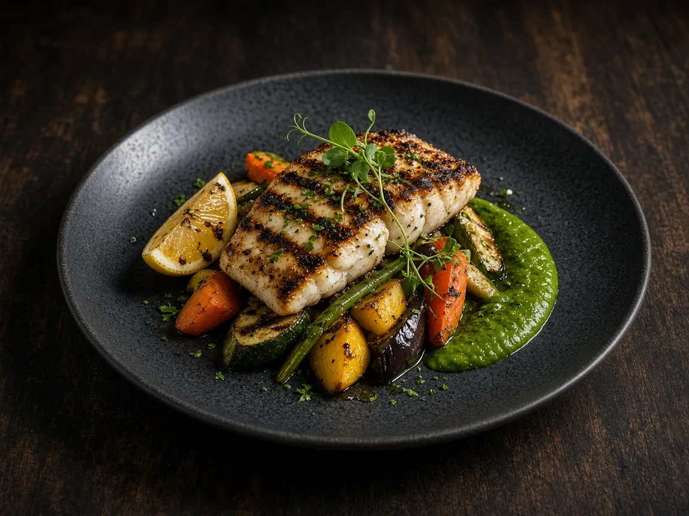
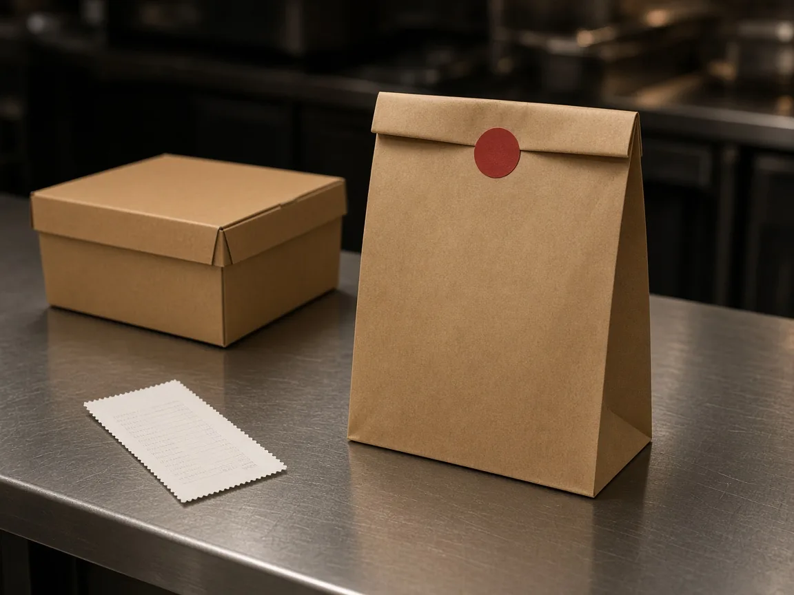
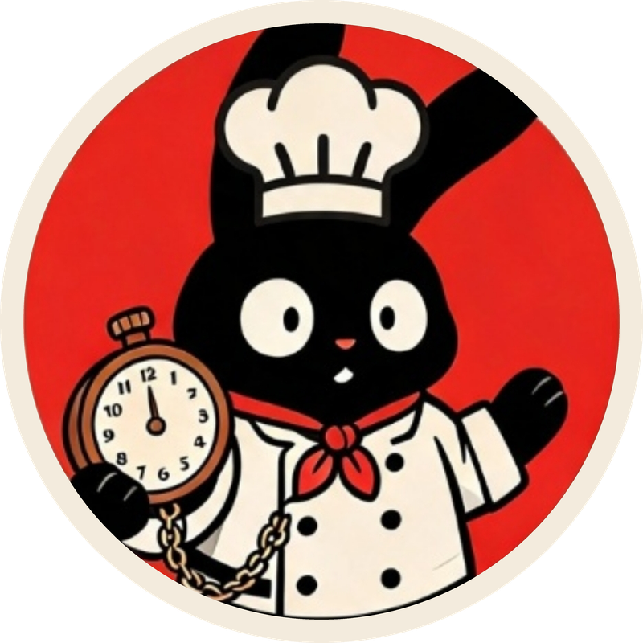

“Chegou frio e demorou.”
Muitas vezes nasce no preparo e na expedição, não no entregador. Sem rotina de saída, o pico repete o erro.

Delivery no iFood · Restaurante independente · Atendimento remoto
Cuido da sua loja no iFood como quem já tocou cozinha: leio o que o cliente reclama, investigo como cada queixa pode se relacionar com o prato e a rotina, quando houver dados, e acompanho os números toda semana. Com evidência e sem milagre.
Você manda alguns prints da loja no app. Eu devolvo uma página com o que vi. Nada além disso é pedido.
O problema
No delivery, o pedido não espera ninguém e a avaliação fica à vista de todos. O dono lê a reclamação, mas quase nunca tem tempo de descobrir de qual prato, de qual turno e de qual rotina ela veio. Não é falta de esforço: é falta de padrão e de alguém olhando toda semana.

Muitas vezes nasce no preparo e na expedição, não no entregador. Sem rotina de saída, o pico repete o erro.
Pedido sem conferência na saída vira avaliação ruim e, às vezes, cancelamento que ninguém acompanha.
Com a taxa do app e o custo do prato, o item mais pedido pode ser o que menos deixa no caixa.

Como funciona
Começa com a análise grátis da sua loja no iFood. Se fizer sentido, seguimos para um piloto pago de gestão da loja, pelo método Aboyeur, girando este ciclo:
Aboyeur é quem, na cozinha profissional, fica no passe, canta os pedidos e garante que o prato saia certo. É o que fazemos com a sua loja.
Cada avaliação respondida no tom do seu restaurante, sem texto pronto e sem expor quem avaliou.
Atraso, temperatura, item faltando, porção, embalagem: cada queixa vai para o seu tema.
Quando houver informação suficiente, relaciono o tema ao prato e ao turno; a causa fica como hipótese até ser verificada.
Uma página por semana: faça mais assim, corrija isto. Simples de ler no passe.

Módulos
Entram como parte da gestão, não como produto separado.
Quem decide é você. Eu sugiro e confiro. Você autoriza tudo que mexe na loja (preço, cardápio, pausa). E fica registrado: o quê, quando e quem aprovou.
O que fica claro desde o começo
Nem nota mais alta, nem menos cancelamento, nem mais vendas ou lucro, nem posição no ranking do iFood. O serviço é de meio: eu organizo, acompanho e mostro evidência. As metas são combinadas, não garantidas.
Acesso só por perfil próprio no Portal do Parceiro, nunca a sua senha. O nome de quem avaliou não vai para relatório nenhum. Não opero a sua cozinha, não faço anúncio pago e não dou parecer jurídico sobre contrato com aplicativo.

Para quem
Restaurante, lanchonete ou café de uma a três lojas, com pedidos todos os dias e avaliações que incomodam. Atendimento remoto para negócios de outras cidades.
Para o chef e o líder de salão ou de bar: checklist de abertura, de saída e de fechamento, responsável por turno, e uma equipe que sabe o que fazer sem perguntar.
Perguntas
Não. Para a análise grátis bastam prints. Para o acompanhamento, o acesso é por um perfil próprio no Portal do Parceiro, criado por você e que pode ser retirado quando quiser.
A análise é grátis. Os valores do piloto e da gestão da loja são informados depois da análise grátis, para o preço caber no tamanho do trabalho.
Não, e desconfie de quem garante. O que eu garanto é método: leitura das avaliações, ajustes combinados, acompanhamento semanal e relatório honesto, inclusive quando o número não melhora.
O foco hoje é o iFood. Os outros aplicativos entram como contexto da análise, quando fizer sentido para a sua loja.
Não. O trabalho acontece em cima do que você já usa. Tecnologia entra só quando reduz trabalho.

Quem está no passe
Mais de uma década no chão de restaurante: salão, cozinha, bar, vendas e gestão, de redes e franquias a negócio próprio.
O método nasceu no balcão, na chapa e no fechamento de caixa, não em escritório.
Investidores · Em teste e validação
Custo que ninguém mede, rotina que só existe na cabeça do dono, cancelamento que ninguém acompanha, prato que vende sem margem. O Tempo de Cozinha transforma isso em rotina, evidência e relatório, num método que se repete de restaurante em restaurante, com tecnologia só onde ela reduz trabalho. A fase atual é de teste e validação com os primeiros restaurantes.
Falar sobre investimento
Contato
Mande uma mensagem. A resposta vem por e-mail.